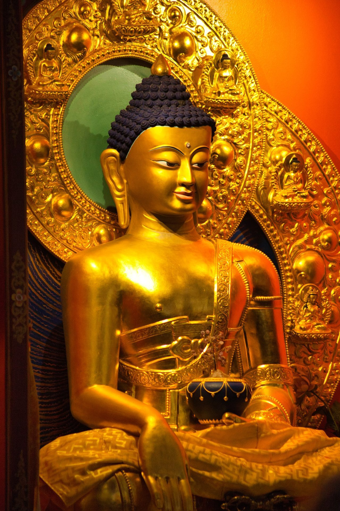

Union Bouddhiste de France
Une association nationale qui fédère et représente les différentes traditions bouddhistes présentes en France.
Une association nationale qui fédère et représente les différentes traditions bouddhistes présentes en France.
L'Union Bouddhiste de France est une fédération nationale créée en 1986 afin de représenter et rassembler les différentes traditions bouddhistes présentes en France. Association à but non lucratif et apolitique, elle a pour mission de favoriser les liens entre les communautés bouddhistes et les institutions publiques, tout en contribuant à une meilleure connaissance du bouddhisme dans la société française.
L'UBF regroupe de nombreuses associations, centres de pratique et congrégations bouddhistes issus de diverses écoles et traditions. Elle agit comme interlocuteur reconnu auprès des pouvoirs publics et participe également au dialogue interreligieux en France.
Par ses actions, l'Union Bouddhiste de France œuvre à promouvoir les valeurs fondamentales du bouddhisme — sagesse, compassion et responsabilité — tout en soutenant le développement harmonieux de la pratique bouddhiste dans le cadre de la société laïque française. Elle contribue également à l'information du public sur le bouddhisme et favorise les échanges entre les différentes traditions présentes dans le pays.
L'UBF s'est dotée de deux autres instances : UBF Découvertes, qui organise des voyages pour visiter les centres bouddhiques par régions, et qui gère et édite le magazine Sagesses Bouddhistes le Mag ; et le Fonds de dotation de l'UBF.
C'est l'UBF qui est en charge de l'émission dominicale Sagesses Bouddhistes sur France 2, dans le cadre des émissions religieuses du service public, Les chemins de la foi.
Depuis 2025, l'émission Sagesses Bouddhistes a sa chaîne YouTube, où sont visibles toutes les émissions produites.

Photographie Philippe Ferrant.
L'Union Bouddhiste de France coordonne les aumôneries bouddhistes en France : hôpitaux, établissements pénitentiaires et, souhaitons-le pour un avenir proche, les armées. Les aumôniers y assurent un accompagnement spirituel auprès des personnes qui en font la demande, quelle que soit leur tradition.
Lopön Thrinlé Tenzin est aumônier hospitalier de l'Union Bouddhiste de France en Vendée depuis 2020. Il a occupé la fonction de co-président de l'Union Bouddhiste de France de 2022 à 2026.